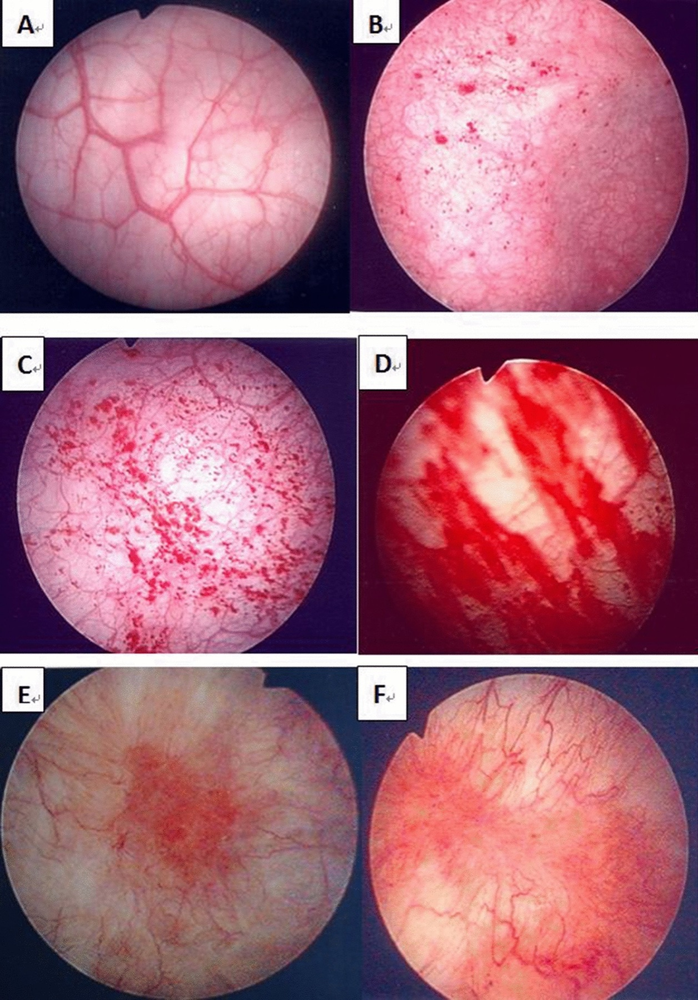
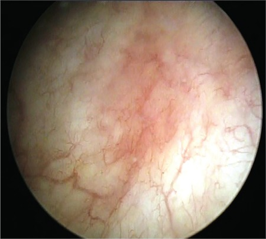

Página 8 · Parte 2 · Síndrome da bexiga dolorosa
A dor que muda com o volume e tudo o que precisa ser excluído antes
Urgência ela tem. Frequência, também. Noctúria, também. Mais de 80% das pacientes com bexiga dolorosa têm urgência — e é por isso que nenhum desses três sintomas separa coisa alguma. O que separa é outra pergunta.
A marca clínica: a dor que muda com o volume
A primeira dica está na própria definição: a paciente tem dor ao enchimento vesical que melhora ao esvaziamento. Esse é o dado que abre a suspeita, e ele tem lastro numérico — mais de 90% das pacientes com a síndrome relatam exatamente esse comportamento. Repare que se trata de uma relação, não de um sintoma isolado: não é "dor pélvica", é "dor que sobe enquanto enche e cai quando esvazia". Uma dor pélvica constante, indiferente ao volume, aponta para outro lugar.
Os sintomas que acompanham — e a hematúria que muda de significado
O quadro raramente vem só com dor. Podem acompanhar: frequência urinária grave e incapacitante — e o adjetivo importa, porque essas pacientes chegam a urinar dezenas de vezes por dia e organizam a vida em torno do banheiro; urgência urinária; noctúria; disúria; hematúria ocasional. Esse último merece uma distinção que vale questão: hematúria ocasional faz parte do quadro da síndrome; hematúria persistente é outra história — ela obriga a exclusão de câncer de bexiga, principalmente acima dos 40 anos, em tabagistas ou com exposição ocupacional a agentes de risco ↗A7. Mesma palavra, dois pesos: um é sintoma da doença que se investiga, o outro é sinal de alarme que muda a prioridade da investigação.
A dor muda de endereço, não muda de comportamento
A localização varia bastante e isso desorienta quem procura um ponto fixo. A dor pode ser suprapúbica, e pode ser referida como pélvica, uretral, ureteral, vaginal ou perineal. E o ponto que amarra tudo: todas essas dores melhoram com o esvaziamento da bexiga — é a característica, não a localização, que sustenta a suspeita. Uma paciente que aponta a dor na vagina e outra que aponta no períneo podem ter a mesma doença, desde que as duas descrevam a mesma relação com o volume. Quem procura topografia se perde; quem procura comportamento acerta.
O divisor contra a bexiga hiperativa
Volta o par que foi semeado, agora com o discriminador completo. Urgência não separa as duas entidades: ela ocorre em mais de 80% das pacientes com bexiga dolorosa. Frequência e noctúria também não separam. O que separa é o motivo pelo qual a paciente vai ao banheiro: na síndrome da bexiga dolorosa, ela urina para evitar ou aliviar a dor; na hiperatividade do detrusor, ela urina para evitar a incontinência ↗A7. Duas perguntas de consultório resolvem: "a senhora vai ao banheiro porque dói, ou porque tem medo de não conseguir segurar?" — e "depois que a senhora urina, o que melhora: a dor ou o medo?". Há ainda um refinamento de qualidade do sintoma: a urgência da bexiga hiperativa é de início súbito, com medo de perder urina; a da bexiga dolorosa é persistente, com medo da dor. E um dado objetivo, sem entrar em traçado: a capacidade cistométrica máxima é significativamente maior na bexiga hiperativa do que na síndrome da bexiga dolorosa, e essas pacientes têm menos episódios de incontinência ↗A7.
Primeira e segunda camadas: urina estéril e os seis agentes
A primeira camada da investigação é EAS e urinocultura, para excluir infecções do trato urinário. É o exame mais banal do tema e o mais indispensável, porque infecção reproduz o quadro inteiro e é a causa que precisa cair primeiro. A segunda camada entra por um gatilho específico: diante de urinas estéreis — sintomas persistindo com cultura de rotina sem crescimento —, a ESSIC recomenda testes específicos de pesquisa para agentes que a cultura convencional não detecta. São seis: Chlamydia trachomatis; Mycoplasma (M. hominis / M. genitalium); Ureaplasma (U. urealyticum); Corynebacterium (C. urealyticum); espécies de Candida; Mycobacterium tuberculosis. A lista é um subconjunto fiel da tabela de doenças confundíveis da própria sociedade, e a última entrada não é adorno: cistite tuberculosa entra no diferencial e volta a aparecer quando se falar de biópsia. E há um ponto de realidade que ensina tanto quanto o critério: dispor desses testes é um desafio concreto, e trazido para a rotina do sistema público brasileiro o desafio é grande. Saber o que a diretriz recomenda e saber o que se consegue pedir são duas competências diferentes — e a segunda também é cobrada, na forma de conduta viável.
A cistoscopia: duas indicações e dois achados de pesos diferentes
A cistoscopia não é rotina nesta síndrome — ela entra por indicação, e são duas. A primeira é quando é preciso excluir outras condições. O exemplo é câncer de bexiga em paciente maior de 40 anos ↗A7 — e é aqui que a hematúria persistente do começo da página cobra sua consequência. A segunda indicação é a suspeita de caso de maior gravidade, para surpreender os achados endoscópicos que caracterizam a doença grave. E são dois achados, que a literatura recente separou radicalmente:
As glomerulações são hemorragias petequiais puntiformes, difusas pela mucosa, que surgem após a distensão. Elas continuam fazendo parte do vocabulário do tema, mas perderam especificidade: nem toda paciente com a síndrome as apresenta, nem toda paciente que as apresenta tem a síndrome, e — o dado que fecha a questão — elas foram encontradas em igual frequência em mulheres assintomáticas. Nem a presença nem a gravidade dessas lesões se correlacionam com os sintomas. Na grade de classificação da ESSIC, só contam as de grau II e III, e mesmo assim para classificar, não para diagnosticar. Traduzindo: glomerulação não fecha diagnóstico.
A úlcera de Hunner é outra coisa. É o achado clássico e o único com correlação estabelecida com dor e urgência. Ela se apresenta como uma lesão eritematosa localizada, com pequenos vasos convergindo para uma área central de cicatriz ou depósito de fibrina, que se rompe em fissura quando a bexiga é distendida. E o seu peso mudou para cima: hoje se fala em doença da lesão de Hunner como subtipo distinto, com patologia comprovada — pancistite, inflamação crônica subepitelial, desnudamento do epitélio. Os dois subtipos não se distinguem clinicamente: só a cistoscopia separa. E encontrar a úlcera muda a conduta, porque ela ganha tratamento próprio. Ou seja: um achado classifica, o outro decide. Tratá-los como equivalentes é perder exatamente o que a literatura recente construiu.
Hidrodistensão, biópsia — e o que não é rotina
A hidrodistensão é feita como cistoscopia sob anestesia. Promove-se enchimento vesical de curta duração — 1 a 2 minutos — com pressão de cerca de 80 cmH₂O, que é a referência clássica e está dentro da faixa de baixa pressão (60-80 cmH₂O). Depois esvazia-se e observa-se se a paciente permanece com dor ou fica sem dor. E a indicação é seletiva: a hidrodistensão é pensada normalmente para pacientes com doença grave, porque é nelas que se buscam exatamente as glomerulações e as úlceras, cuja visualização é mais efetiva após a distensão — a distensão é o gatilho da visibilidade.
Um alerta de segurança que vale mais do que o número em si: hidrodistensão de alta pressão e longa duração não deve ser oferecida. Pressões acima de 80-100 cmH₂O e duração superior a 10 minutos associam-se a rotura vesical e sepse, sem ganho consistente de benefício. É por isso que o valor a imprimir na memória é ~80 cmH₂O por 1-2 minutos: não é preciosismo de número, é a diferença entre um procedimento diagnóstico e uma complicação evitável.
A biópsia vesical com estudo histopatológico pode ser necessária para exclusão de malignidade — e é importante entender o verbo: ela exclui, não confirma. Não existem achados histológicos específicos da síndrome; o que a biópsia faz é afastar carcinoma urotelial, cistite eosinofílica e cistite tuberculosa (fechando o círculo com o M. tuberculosis da lista de agentes). Pode ainda ser necessária avaliação de resíduo miccional ↗A7 e estudo urodinâmico de múltiplos canais ↗A7. Mas atenção ao item que a banca inverte: resíduo miccional e urodinâmica multicanal NÃO são avaliação rotineira na síndrome da bexiga dolorosa — avalia-se caso a caso, individualizando quem se beneficia. As diretrizes são unânimes: esses exames não são necessários para o diagnóstico em apresentações não complicadas; eles servem para excluir outras afecções quando o quadro é duvidoso. A mesma lógica, aliás, vale para a própria cistoscopia — nenhuma paciente com quadro típico precisa de endoscopia para receber o diagnóstico.
Funil de investigação em camadas
cada camada responde a uma pergunta- 1 · EAS + urinoculturaexcluir infecção do trato urinário
- 2 · Urina estéril → testes específicos ESSICChlamydia trachomatis · Mycoplasma hominis / M. genitalium · Ureaplasma urealyticum · Corynebacterium urealyticum · espécies de Candida · Mycobacterium tuberculosisdisponibilidade é o desafio real na rotina do SUS
- 3 · Cistoscopia por indicaçãoexcluir outras condições, como câncer de bexiga em >40 anos · suspeita de maior gravidadeglomerulação = inespecífica, classifica · Hunner = define subtipo, muda conduta
- 4 · Hidrodistensão nos casos gravescistoscopia sob anestesia · ~80 cmH₂O (60–80) · 1–2 min · esvaziar e observar a doralta pressão (>80–100) e longa duração (>10 min) NÃO devem ser oferecidas — rotura vesical e sepse
Hiperativa: urina para não perder urina ↗A7 · dolorosa: urina para aliviar a dor.

Após a hidrodistensão, numerosas hemorragias petequiais puntiformes distribuem-se difusamente pela mucosa vesical, configurando glomerulações grau 2.
Procure primeiro a distribuição: são dezenas de focos vermelhos pequenos e planos, espalhados pelo campo mucoso, sem um centro único. Esse padrão difere da lesão de Hunner, que é focal, eritematosa e pode apresentar cicatriz ou coágulo central com vasos convergentes; difere também do tumor papilífero, que forma massa exofítica, e do trauma de instrumentação, que tende a produzir sangramento focal ou linear.
Glomerulações grau 2 participam da classificação cistoscópica, mas não são específicas nem diagnósticas isoladamente.
Adaptado da Figura 2C de Yu WR et al., Scientific Reports 11, 455 (2021), sob licença CC BY 4.0. DOI 10.1038/s41598-020-80252-x. Alterações: recorte e sobreposição didática removível. Acesso em 28/07/2026.

Lesão de Hunner como foco eritematoso central com pequenos vasos dispostos radialmente, em contraste com o padrão difuso e sem centro dominante das glomerulações.
Procure primeiro a focalidade: há uma região eritematosa única e dominante no centro do campo, cercada por pequenos vasos de arquitetura radial. A imagem não demonstra direção de fluxo; os vasos apenas formam raios entre centro e periferia.
Esse padrão contrasta com as glomerulações, formadas por múltiplas petéquias disseminadas, sem cicatriz ou centro vascular dominante. Também difere do tumor papilífero, que projeta frondes para o lúmen. O carcinoma in situ pode produzir placa plana, avermelhada e aveludada semelhante; portanto, a aparência endoscópica isolada não o exclui — lesão suspeita exige avaliação oncológica e biópsia.
A identificação de Hunner define o subtipo inflamatório e permite tratamento direcionado à lesão. Nesta peça, deve-se reconhecer somente foco eritematoso + arquitetura radial; fissura pós-distensão não é atribuída a uma imagem que não a comprova.
Figura 1 de Acar O e Tarcan T., Journal of the Turkish-German Gynecological Association 20(2):117–122 (2019), imagem cortesia do Dr. Tufan Tarcan, licenciada sob CC BY 2.5. DOI 10.4274/jtgga.galenos.2018.2018.0102. Alterações: nenhuma na versão limpa; pista didática aplicada apenas como overlay reversível. Acesso em 28/07/2026.
Quiz — fixação
Mulher de 52 anos com dor suprapúbica que piora ao encher a bexiga e melhora após urinar, associada a urgência e frequência, há 2 anos. EAS e urinocultura normais. A afirmação correta sobre a conduta investigativa é:
- Gabarito B. A urina estéril é o gatilho da segunda camada: pesquisar Chlamydia trachomatis, Mycoplasma, Ureaplasma, Corynebacterium, espécies de Candida e Mycobacterium tuberculosis — agentes que a cultura convencional não pega e que reproduzem o quadro.
- (A) cai na armadilha central: urgência ocorre em mais de 80% das pacientes com bexiga dolorosa e não discrimina; além disso, a paciente urina para aliviar a dor, não para evitar perda ↗A7.
- (C) inverte o item mais cobrado: urodinâmica multicanal e resíduo miccional não são rotina — entram caso a caso, para excluir outras afecções.
- (D) transforma um exame de indicação em exame de rotina; a cistoscopia entra para excluir outras condições ou diante de suspeita de gravidade, e não é necessária numa apresentação típica.
- Por que cair na (C): o candidato associa "investigação completa" a "pedir tudo", quando a lógica de um diagnóstico de exclusão é ordenada — cada camada responde a uma pergunta, e as camadas invasivas só entram quando há motivo.
Sobre os achados endoscópicos na síndrome da bexiga dolorosa:
- Gabarito C. É a distinção que a literatura recente construiu: glomerulações aparecem em igual frequência em mulheres assintomáticas e não se correlacionam com sintomas — servem para classificar (e só as de grau II-III entram na grade), não para diagnosticar; a lesão de Hunner é o achado clássico, o único correlacionado com dor e urgência, define um subtipo de doença e ganha tratamento próprio.
- (A) dá à glomerulação um valor que ela perdeu — é o erro mais comum e o mais desatualizado.
- (B) inverte exatamente os dois pesos.
- (D) contraria o mecanismo da visibilidade: os achados são mais bem visualizados após a distensão, que é justamente por isso que se faz a hidrodistensão nos casos graves.
- Por que cair na (A): "glomerulação" é uma palavra rara, exótica, e o cérebro trata termo raro como sinal específico — quando aqui o termo raro é o inespecífico, e o achado que decide tem nome próprio de pessoa.
Na hidrodistensão realizada para avaliação da síndrome da bexiga dolorosa, os parâmetros mais adequados e a razão de segurança são:
- Gabarito B. O procedimento é feito sob anestesia, em baixa pressão (60-80 cmH₂O, referência ~80) e curta duração (1-2 min); alta pressão (> 80-100 cmH₂O) e longa duração (> 10 min) não devem ser oferecidas, por associação com rotura vesical e sepse sem ganho consistente de benefício.
- (A) é o oposto da recomendação em ambos os eixos, e o raciocínio de "maximizar exposição" é exatamente a justificativa que a diretriz recusa.
- (C) trata a anestesia como se ela protegesse da lesão mecânica — anestesia controla dor, não pressão intravesical.
- (D) acerta a pressão e erra a duração, e afirma justamente o que a evidência nega: duração é o segundo eixo do risco.
- Por que cair na (D): o candidato memoriza o número da pressão como se fosse o único parâmetro relevante e trata o tempo como detalhe — mas a proscrição é de alta pressão E longa duração, dois fatores independentes.
Excluído tudo o que precisava ser excluído e dado o nome, começa o tratamento — e ele sobe em quatro degraus, cada um mirando um alvo diferente.